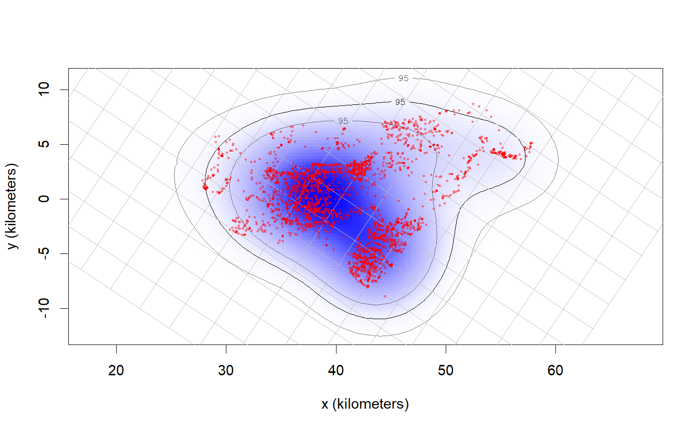

akde.RdThese functions calculate individual and population-level autocorrelated kernel density home-range estimates from telemetry data and a corresponding continuous-time movement models.
akde(data,CTMM,VMM=NULL,R=list(),SP=NULL,SP.in=TRUE,variable="utilization",debias=TRUE,
weights=FALSE,smooth=TRUE,error=0.001,res=10,grid=NULL,...)
pkde(data,UD,kernel="individual",weights=FALSE,ref="Gaussian",...)2D timeseries telemetry data represented as a telemetry object or list of objects.
A ctmm movement model from the output of ctmm.fit or list of objects.
An optional vertical ctmm object for 3D home-range calculation.
A named list of raster covariates if CTMM contains an RSF model.
SpatialPolygonsDataFrame object for enforcing hard boundaries.
Locations are assumed to be inside the SP polygons if SP.in=TRUE and outside of SP if SP.in=FALSE.
Not yet supported.
Debias the distribution for area estimation (AKDEc).
"Smooth" out errors from the data.
Optimally weight the data to account for sampling bias (See bandwidth for akde details).
Target probability error.
Number of grid points along each axis, relative to the bandwidth.
Optional grid specification via raster, UD, or list of arguments (See `Details' below).
A list of individual UD objects corresponding to data.
Bandwidths are proportional to the individual covariances if kernel="individual" or to the population covariance if kernel="population".
Include non-Gaussian overlap corrections if ref="AKDE" and weights=TRUE.
For weighted AKDE, please note additional ... arguments passed to bandwidth, which can have a large impact on computation time in certain cases.
When feeding in lists of telemetry and ctmm objects, all UDs will be calculated on the same grid. These UDs can be averaged with the mean.UD command.
If a UD or raster object is supplied in the grid argument, then the estimate will be calculated on the same grid. Alternatively, a list of grid arguments can be supplied, with any of the following components:
rA list with vectors x and y that define the grid-cell midpoints.
drA vector setting the x and y cell widths in meters. Equivalent to res for raster objects.
extentThe \(x\)-\(y\) extent of the grid cells, formatted as from the output of extent.
align.to.originLogical value indicating that cell midpoint locations are aligned to be an integer number of dr steps from the projection origin.
Returns a UD object: a list with the sampled grid line locations r$x and r$y, the extent of each grid cell dr, the probability density and cumulative distribution functions evaluated on the sampled grid locations PDF & CDF, the optimal bandwidth matrix H, and the effective sample size of the data in DOF.H.
C. H. Fleming, W. F. Fagan, T. Mueller, K. A. Olson, P. Leimgruber, J. M. Calabrese, ``Rigorous home-range estimation with movement data: A new autocorrelated kernel-density estimator'', Ecology, 96:5, 1182-1188 (2015) doi:10.1890/14-2010.1 .
C. H. Fleming, J. M. Calabrese, ``A new kernel-density estimator for accurate home-range and species-range area estimation'', Methods in Ecology and Evolution, 8:5, 571-579 (2017) doi:10.1111/2041-210X.12673 .
C. H. Fleming, D. Sheldon, W. F. Fagan, P. Leimgruber, T. Mueller, D. Nandintsetseg, M. J. Noonan, K. A. Olson, E. Setyawan, A. Sianipar, J. M. Calabrese, ``Correcting for missing and irregular data in home-range estimation'', Ecological Applications, 28:4, 1003-1010 (2018) doi:10.1002/eap.1704 .
In the case of coarse grids, the value of PDF in a grid cell corresponds to the average probability density over the entire rectangular cell.
The PDF estimate is not re-normalized to 1, and may fall short of this by the target numerical error. If inspecting quantiles that are very far from the data, the quantiles may hit the grid boundary or become erratic, making it necessary to reduce the numerical error target. However, default arguments should be able to render any quantiles of reasonable accuracy.
Prior to ctmm v0.3.2, the default AKDE method was the autocorrelated Gaussian reference function bandwidth.
Starting in v0.3.2, the default AKDE method is the autocorrelated Gaussian reference function bandwidth with debiased area.
Prior to ctmm v0.3.1, AKDEs included only errors due to autocorrelation uncertainty, which are insignificant in cases such as IID data.
Starting in v0.3.1, akde calculated an effective sample size DOF.H and used this to estimate area uncertainty under a Gaussian reference function approxmation.
In v0.3.2, this method was further improved to use DOF.area from the Gaussian reference function approximation.
# \donttest{
# Load package and data
library(ctmm)
data(buffalo)
DATA <- buffalo$Cilla
# calculate fit guess object
GUESS <- ctmm.guess(DATA,interactive=FALSE)
# in general, you should be running ctmm.select here instead of ctmm.fit
FIT <- ctmm.fit(DATA,GUESS)
# Compute akde object
UD <- akde(DATA,FIT)
#> Default grid size of 3 minutes chosen for bandwidth(...,fast=TRUE).
# Plot data with AKDE
plot(DATA,UD=UD)
#> DOP values missing. Assuming DOP=1.

# }